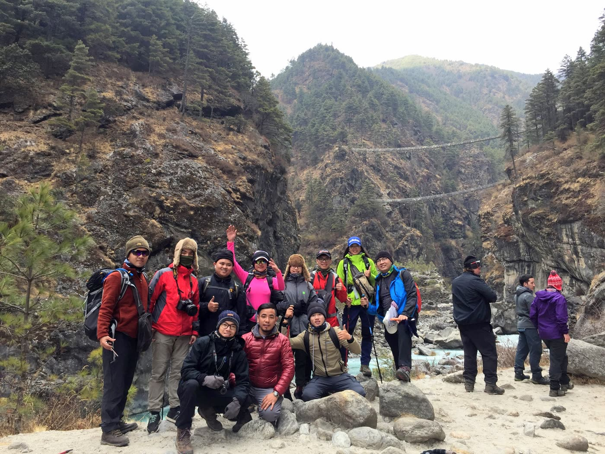
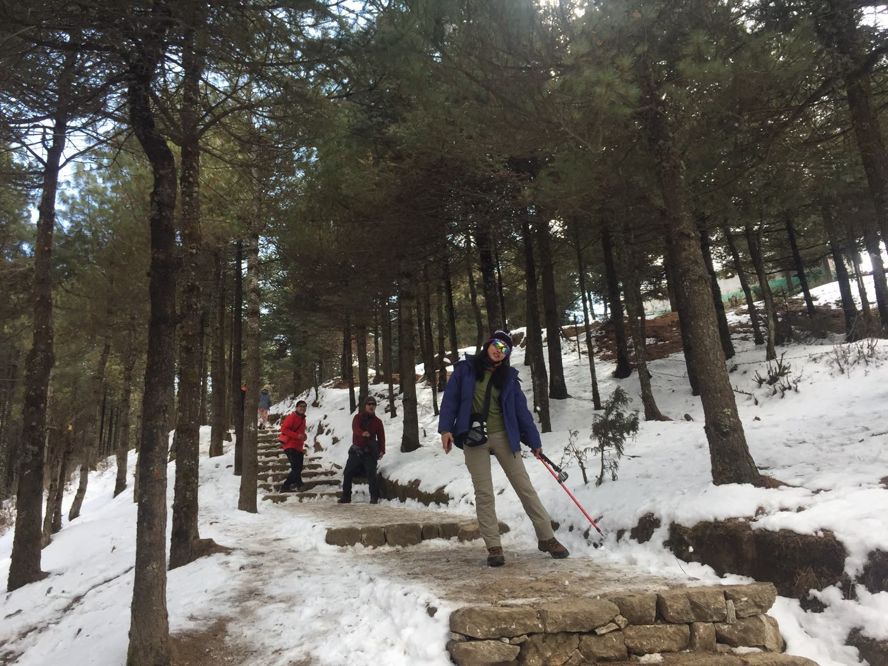
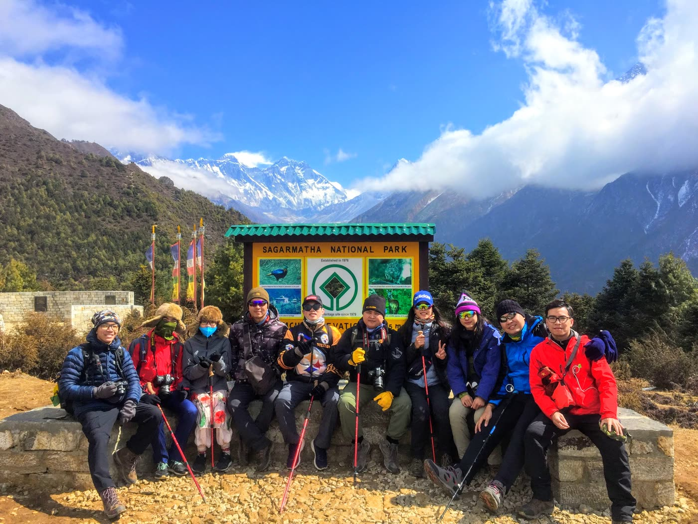
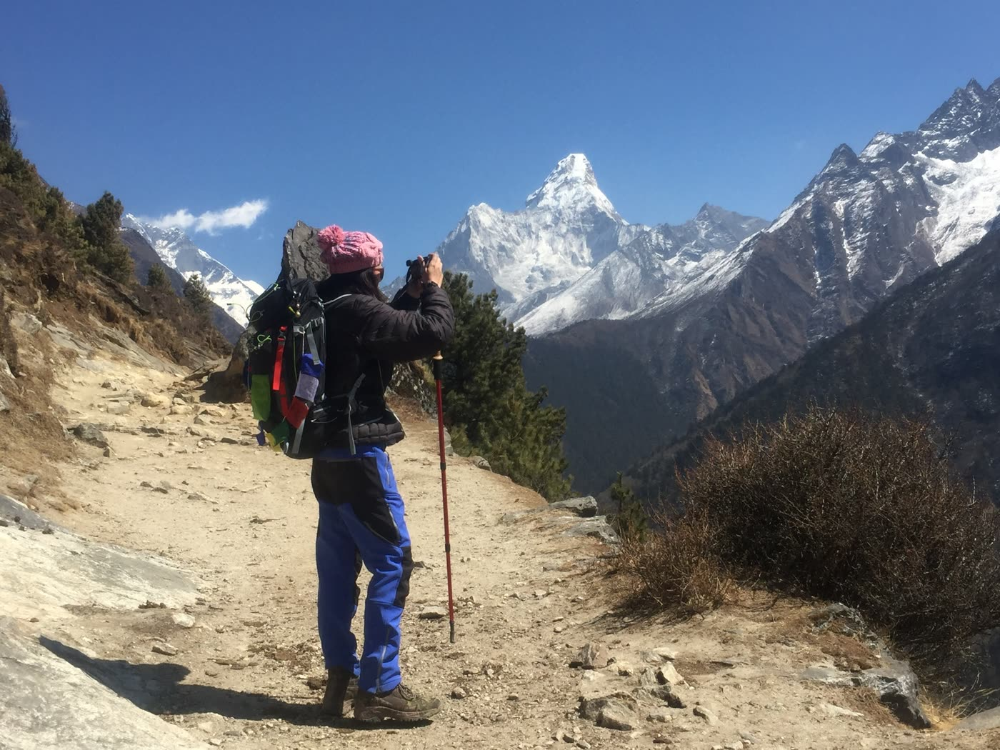
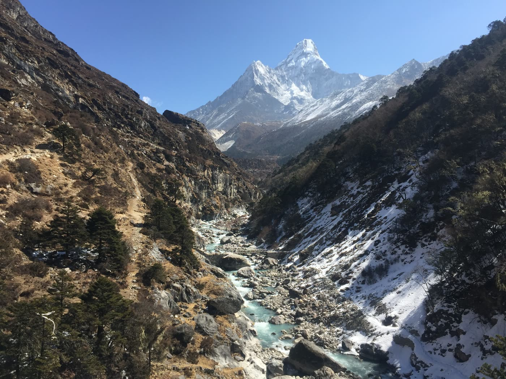
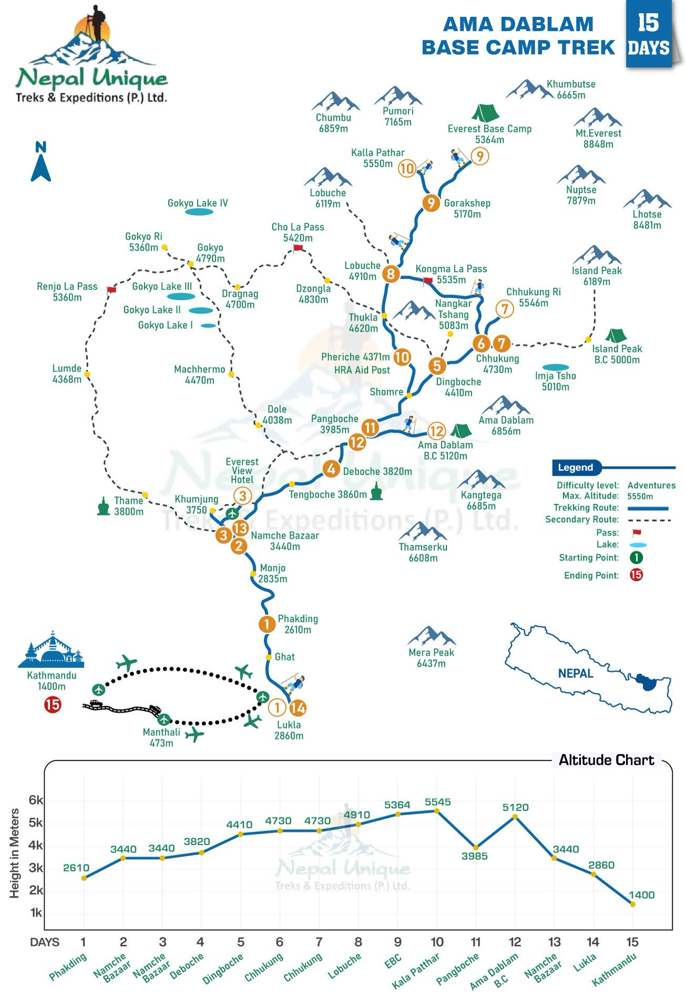

Ama Dablam Base Camp Trek
Ama Dablam Base Camp Trek Explore the stunning Ama Dablam Base Camp on a 15-day trek through the Everest Region Trekking. Learn about costs, permits, itineraries, and the best seasons for an unforgettable adventure in Nepal.





Key Trip Facts
Trek Overview
Trip Highlights
Ama Dablam Base Camp Trek
Explore the stunning Ama Dablam Base Camp on a 15-day trek through the Everest Region Trekking. Learn about costs, permits, itineraries, and the best seasons for an unforgettable adventure in Nepal. Ama Dablam, known as the “Matterhorn of the Himalayas,” is one of Nepal’s most striking peaks. Its sharp ridges and towering presence make it an unforgettable sight. The Ama Dablam Base Camp Trek takes you through the heart of the Khumbu region, offering breathtaking scenery, rich cultural experiences along the route, and a journey filled with adventure.
The journey begins with a thrilling flight to Lukla, the Gateway to Everest. Traversing through lush forests, suspension bridges, and small settlements, we will pass through the bustling Namche Bazaar. In addition, it is the lively trade center of the region, where trekkers and locals mingle. Moreover, Tengboche Monastery, situated on a hilltop, offers not just spiritual energy but also panoramic mountain views.
In addition, experience the culture and religion of the locals in the festive season. Some of the festivals to experience while trekking in the Khumbu Region are the Mani Rimdu Festival, Dumji Festival, Saka Dawa Festival, and many more.
Furthermore, we will explore the oldest and largest monasteries, fluttering prayer flags, and welcoming Sherpa communities. The locals, known for their resilience and warmth, share stories of Everest Expeditions in Nepal and their Buddhist traditions. Every village echoes with ancient chants and the scent of burning juniper, adding a spiritual essence to the journey.
The Ama Dablam Base Camp Trek is an unforgettable blend of adventure, culture, and breathtaking scenery. From thrilling ascents to peaceful monastery visits, this journey captures the essence of the Himalayas. Whether you seek stunning views, cultural richness, or a rewarding challenge, this trek promises an experience like no other.
Why choose us for this trek?
At Nepal Unique Treks, we specialize in crafting unforgettable trekking experiences. As a government-authorized trekking agency, we have been organizing adventure trips across Nepal for over 20 years, ensuring smooth and hassle-free journeys for trekkers from around the world.
What Sets Us Apart? Expert & Licensed Guides
Our government-licensed guides are experienced professionals with over a decade in the field. They ensure your journey is safe, informative, and culturally enriching.
Customized Itineraries
We understand that every trekker has unique preferences. Whether you want to adjust the pace, add extra stops, or extend your adventure, we offer flexible and personalized trekking plans tailored just for you.
Seamless Logistics & Premium Services
From designing exceptional itineraries to handling permits, accommodations, and meals, we take care of all logistics. We carefully select every meal served and every lodge chosen to provide you with the best experience.
Strong Local Networks
Our deep-rooted connections with local communities and guides across different regions add an extra layer of convenience and support, making your trek smoother and more immersive.
Permits required for Ama Dablam Base Camp Trek
There are some protected areas on the path that we require a permit to pass through. Upon arrival at the destination, the officials will verify our permits and allow us to enter the area. Therefore, it is crucially important to have a permit for this journey. In addition, there is a special permit, Trekker's Information Management System (TIMS) Permit, which allows the government officials to track the trekkers for their well-being and safety. For the Ama Dablam Base Camp Trek, we require the following permits:
Sagarmatha National Park Entry Permit
The Government of Nepal established Sagarmatha National Park as a protected area to preserve the flora and fauna of this region. And, on our journey, we have to pass through the national park. So, we require a Sagarmatha National Park Entry Permit.
Khumbu Pasang Lhamu Municipality Entry Permit
Similarly, to support the local community of the Khumbu Region and contribute towards the local developmental projects and infrastructures, we require a Khumbu Pasang Lhamu Municipality Entry Permit.
Trekker's Information Management System (TIMS) Permit
In addition, the Nepal Mountaineering Association (NMA) requires a permit to climb Island Peak, which you can obtain from them. Moreover, it also allows monitoring of the trekkers for their safety within the protected areas. Finally, issued by government officials, a TIMS Permit is a special type of permit that helps the government officials track the trekkers, ensuring their safety and well-being.
In Nepal Unique Treks, we help you to get these permits without any hassle. Let us streamline the process of getting these permits while you prepare for the trek.
Why is insurance necessary for the Ama Dablam Base Camp Trek?
Trekking up in the Himalayas consists of multiple risks. According to the situation, there might be cases where we might require emergency evacuation or medical attention. During these scenarios, insurance can become a lifesaver for you.
There are different kinds of insurance you can get before starting this journey. Some of them provide medical coverage, emergency evacuation, cancellation insurance, and many more. However, we highly recommend you take the insurance package that covers all of these.
We will be scheduling our journey in the most favorable seasons, like spring and autumn. However, there is still a possibility of some changes in the weather. A sudden change in weather can disrupt our entire trek and can lead to other emergencies as well. Therefore, to ensure things go smoothly even in emergencies, we recommend you get the full insurance package. Furthermore, our guides will always be there to assist and navigate you even in emergency cases. This way, we can ensure you have a great journey with all the safety.
Ama Dablam Base Camp Trek Itinerary: Day by Day
15 Days program for Ama Dablam Base Camp Trek. Daily timings and sequences remain flexible according to weather, flight operations, and group pace.
Day 1: Drive from Kathmandu to Ramechhap, followed by flight from Manthali Airport to Lukla (2860 meters / 20 mins). After that, a trek to Phakding/Manzo (2610 meters / 4 to 5 hrs.)
Approx. 2,610 m / 8,563 ft
Well, we should not delay good things whether it be anything, even for the Ama Dablam Base Camp Trek. Therefore, our journey begins on the first day with a drive from Kathmandu to Ramechhap. We begin the drive early in the morning and cover a total distance of 138 kilometers. It takes about 5 hours to reach Ramechhap which will be one of the best drives you go for. Passing through several modern and traditional settlements, pitched and off-roads, rivers, check posts, etc, we make our way to the Manthali Airport. As you reach Ramechhap, our representatives will help you board on flight from Manthali Airport (Ramechhap) to Tenzing and Hilary Airport (Lukla). Another 35 kilometers to cover, but this time, it will be on a flight. The place takes you over some aerial views of different villages, streams, hills, and even mountains. As you land in the Tenzing and Hilary Airport, you can feel the crisp mountain air. From there, our guides will take you for a short trek to Phakding. The trek begins with a gradual descent through pine forests, passing prayer wheels and Mani stones inscribed with Buddhist chants. Besides, this section of the Ama Dablam Base Camp Trekking map follows the Dudh Koshi River while crossing through several suspension bridges covered with fluttering prayer flags. Furthermore, the Lukla to Phakding trail also offers you the views of Himalayas for the first time during this trek. Within the next 4 to 5 hours of walking past some rhododendron and juniper forests. Upon arrival, you’ll settle into cozy teahouses, where warm Sherpa hospitality welcomes you. Enjoy a delicious and fulfilling dinner before going for a comfortable sleep.
Day 2: Ascend from Phakding to Namche Bazaar (3,444 meters / 6 to 7 hrs.)
Approx. 3,440 m / 11,286 ft
We continue the trek in the Ama Dablam Trekking trail after having breakfast and quickly preparing for the ascend. Today, the trail can be a little more challenging because we need to cover a total distance of 10 to 12 kilometers which takes approximately 6 to 7 hours. As you keep walking on the Phakding to Namche trail, you will wander through pine and rhododendron forests, following the glacial river’s course. Furthermore, our journey for this day also passes through small Sherpa villages like Tok Tok, Benkar, and Monjo. On this section of the Ama Dablam Trekking journey, you can also enjoy outstanding glimpses of the traditional mountain lifestyle. Furthermore, this part of the trail also has several Mani Walls, prayer flags, and Chortens. After a few hours of trekking, you’ll reach Monjo (2,835m), the gateway to Sagarmatha National Park, a UNESCO World Heritage Site. Here, your Sagarmatha National Park Entry Permit gets checked by the officials. After that, we enter the Sagarmatha National Park, where the landscape becomes even more dramatic, with towering cliffs, thundering waterfalls, and lush forests teeming with Himalayan wildlife such as musk deer, Himalayan tahr, and Danphe (national bird of Nepal). A little more to walk and we will need to cross the famous Hilary suspension bridge. From there, the Ama Dablam Base Camp Trekking trail becomes more steep, and we follow the Dudh Koshi and Bhote Koshi rivers. Moreover, you will also get to see outstanding views of Mount Everest, Lhotse, and Nuptse. After passing through this long route, you will enter Namche Bazaar, a heaven of Sherpa settlement, located at an altitude of 3,444 meters above sea level.
Day 3: Acclimatization Day at Namche Bazaar with Quick Hike to Everest View Hotel
Approx. 3,440 m / 11,286 ft
After just two days of walking on the Ama Dablam Base Camp Trekking route, we have finally reached an altitude of 3,444 meters above sea level. Remember that, after we ascend above the altitude of 3000 meters, there are higher risk of altitude sickness. Therefore, the Nepal Unique Treks have decided on the third day as an acclimatization or rest day. Here, we do not sit idle throughout the day. Rather than that, the guides will take you for a quick hike to the Everest View Hotel. This viewpoint or hotel is located at an altitude of 3,880 meters above sea level. Here, the trekkers can take some sips of tea or coffee while watching the spectacular views of Mount Everest (8848 meters), along with other mountains, including Lhotse, Ama Dablam, Nuptse, and Thamserku. The hike to Everest View Hotel begins with a steep ascent past Namche’s terraced hills, winding through rhododendron forests and small Sherpa settlements. After spending some amazing time in the Everest View Hotel and watching the mesmerizing view of Ama Dablam’s sharp ridges and Everest’s majestic summit, we return to Namche Bazaar. After reaching Namche, we recommend the trekkers to go for a quick stroll of Namche Bazaar and interact with the locals.
Day 4: Trek from Namche Bazaar to Deboche (3820 meters / 5 hrs.)
Approx. 3,820 m / 12,533 ft
Another day calls for another outstanding, adventurous, and strenuous trek in the Ama Dablam Base Camp Trekking route. After you have your breakfast and prepare for today's hike, the guides lead you on a trek from Namche Bazaar to Deboche. The trail begins with a gentle ascent, offering breathtaking views of Everest (8,848m), Lhotse, Nuptse, and Ama Dablam (6,812m). As you walk along the winding mountain paths, prayer flags flutter in the wind, and yak caravans carrying supplies create an authentic Himalayan experience. Furthermore, the trekkers will also walk through some of the most scenic landscapes in the Everest region while covering this section of the trek to Ama Dablam Base Camp. Within the next 5 hours of leaving Namche Bazaar, we will finally step our feet in Deboche, a monastic settlement located at an altitude of 3820 meters above sea level. Did you know that Deboche was established by Lama Gulu for the benefit of the nuns? Also, the Deboche nunnery stands as the oldest Buddhist nunnery in Nepal that has been active since 1913 A.D. However, before reaching Deboche, the trail also takes you past two other significant settlements in the Everest region, Phunkii Thenga and Tengboche (3867 meters). Overnight stay and dinner will be arranged by Nepal Unique Treks and Expeditions in Deboche.
Day 5: Trek from Deboche to Dingboche (4410 meters / 7 to 8 hrs.)
Approx. 4,410 m / 14,469 ft
Get ready with proper preparation, documents, permits, and most importantly, physical and mental fitness. That's because we will go for a 12 to 14-kilometer-long walk which takes about 7 to 8 hours. As we will cover such long distances in a single day, we recommend the trekkers to have a fulfilling dinner. After that, the journey toward Dingboche (4,410m), one of the highest permanent settlements in the Everest region, begins. Walking on this trail takes the trekkers deeper into the Khumbu Valley while offering eye-soothing views of dramatic landscapes and towering peaks. As we leave Deboche and start the walk, the trail passes through a serene forest of birch, rhododendron, and juniper trees. If lucky enough, you might also get to witness some unique animals, including Himalayan tahr and colorful Danphe. Soon, you’ll cross a small bridge and reach Pangboche (3,985m), the highest permanent Sherpa village in the Khumbu region. In this village, trekkers can explore the Pangboche Monastery, the oldest monastery in the Everest region. Also, many locals believe that this monastery sits as a house to a legendary Yeti, as per the myths. Our journey in the Ama Dablam Base Camp Trail continues through an even more rugged trail and within the next couple of hours, we will reach Dingboche. Remember that, as we reach this altitude, you find yourself in a picturesque village nestled in a wide valley beneath the massive Nuptse, Lhotse, and Ama Dablam peaks. This village also offers spectacular views of Chortens (Buddhist shrines), fluttering prayer flags, and carved mani stones. Upon reaching Dingboche, we will settle into a cozy teahouse, enjoy a warm meal, and then go for a comfortable sleep.
Day 6: Ascend from Dingboche to Chhukung (4730 meters / 4 to 5 hrs.)
Approx. 4,730 m / 15,518 ft
After a couple of days of strenuous long walks, finally, it's a day where we only need to walk for about 4 to 5 hours. Covering a total distance of 5 to 6 kilometers. while passing through different alpine meadows and glacial moraines, we make our way to the Chhukung Village. This village, located at an altitude of 4730 meters above sea level, is home to some small yak pastures, stone-walled fields, and barley and potato farms. However, all of this vegetation becomes thin as you gradually gain altitude. As we go higher and higher, the condition of the trail becomes even more rugged and the ascend becomes more difficult. However, the eye-catching views of Lhotse (8,516m) and Nuptse (7,861m) massifs make every while worth struggling. Moreover, the interactions with some other people living in different settlements throughout this section of the Ama Dablam Trekking route, make the journey even more adventurous and insightful. Chhukung, a small yet vital outpost for trekkers and climbers preparing for high-altitude adventures, is located at the foot of the Imja Tse (Island Peak. Moreover, this place is also the entrance to Kongma La Pass (5,535m). We will arrange your stay at a cozy and comfortable hotel with all the facilities you need for a proper rest.
Day 7: Acclimatization Day at Chhukung (Hike to Chhukung Ri)
Approx. 4,730 m / 15,518 ft
Another acclimatization day in the 15-day- Ama Dablam Base Camp Trekking journey awaits you on the seventh day. As we are at an altitude of above 4000 meters, our body requires proper training against altitude sickness and other higher altitude issues. Therefore, we will also ascend any further on the seventh day. Instead, the professional guides from Nepal Unique Treks take you for a quick hike to the Chhukkung Ri viewpoint. The hike to Chhukkung Ri begins with a steep ascent straight out of Chhukung, winding through rocky ridges and glacial moraine. Besides, as you reach higher in the trail, the trekkers can get some of the most spectacular views of Lhotse and Nuptse, along with other Himalayas, including Ama Dablam, Baruntse, and Makalu. It takes about 2 hours for us to ascend from Chhukkung to Chhukkung Ri, passing through a rocky outcrop offering a breathtaking 360-degree panorama. Besides, the viewpoint offers some outstanding views of Imja Glacier and Imja Tsho (a glacial lake formed due to climate change). We recommend the trekkers capture as many photos and videos before we trace our way back to Chhukkung. Once you return to Chhukung, go for a proper rest and stroll through the village before having dinner and sleeping in the hotel.
Day 8: Trek from Chhukung to Lobuche (4910 meters) via Kongma La Pass (5535 meters / 7 to 8 hrs.)
Approx. 5,530 m / 18,143 ft
The eighth day marks one of the most spectacular, remarkable, and crucial days of the 13-day Ama Dablam Base Camp Trekking journey. That is because, the trekkers will get a chance to ascend to one of the Three Highest Passes of the Everest Trekking Region, the Kongma La Pass (5535 meters). We will leave Chhukung early in the morning as we need to ascend over a rocky and rugged trail. Besides, the path gradually passes through the barren, glacial moraine of the Nuptse and Lhotse mountains, offering spectacular morning views of Ama Dablam, Makalu, and the Island Peak region. It takes about 4 to 5 hours for any average trekker to ascend to Kongma La Pass from Chhukung. There, you will witness a whole different world. A world that offers mindblowing views from an altitude of 5535 meters above sea level. Watching the 360-degree panoramic views of the Himalayas, colorful prayer flags, and staying over the clouds, we spend some time in Kongma La Pass. After that, our journey in the Ama Dablam Base Camp Trekking map continues. Well, it will be a descending journey through some stunning scenery. Remember that, this part of the trail is rocky and uneven. Therefore, you must keep your feet strong and carefully navigate the track. Moreover, this section of the Ama Dablam Base Camp Trekking route also offers you a chance to witness deep crevasses, frozen lakes, and shifting ice formations. It takes about 2 to 3 hours for us to finish the descending journey from Kongma La Pass to Lobuche. In Lobuche, you can check in at the hotel before enjoying dinner and going for a comfortable sleep.
Day 9: Lobuche to Gorakshep 5180m, Trek to Everest Base Camp 5364m and return Gorakshep 9/10 hrs
Approx. 5,364 m / 17,598 ft
As we have already arrived at Lobuche and Everest Base Camp is so near to this village, would not it be injustice to not visit the base camp of the tallest peak in the world? Well, we think that will not be a good idea to return without stepping on the Everest Base Camp. So, as you wake up and have your breakfast in Lobuche, the guides will take you on a trail towards Gorakshep, the last settlement before Everest Base Camp. This will certainly be one of the most challenging days in the 15-Day Ama Dablam Base Camp Trek. After you enjoy a delicious breakfast in Lobuche, we will begin with a gradual but relentless ascent along the Khumbu Glacier’s rocky terrain. As we walk along this section of the Ama Dablam Base Camp Trekking trail, moraine fields, and glacial ridges accompany you. Moreover, the trail also offers outstanding views of some mountains, including Mount Pumori, Nuptse, Lingtren, and Khumbutse. It takes about 3 to 4 hours for us to reach Gorakshep from Lobuche. In Gorakshep, we will take a short break and have something to eat before continuing the walk. After that, the guides take you on a trail towards the Everest Base Camp. Located at an altitude of 5363 meters above sea level, this is the base camp of the tallest peak in the world. It only takes 2 to 3 hours for us to ascend from Gorakshep to the EBC, crossing some rugged, icy, and rocky trails and glacial debris. Furthermore, you can also see the mighty Khumbu Icefall towering ahead while you move your legs continuously. At Everest Base Camp, you will witness several tents, camps, and summiters ascending to the peak of Mount Everest. The dinner and overnight stay will be arranged in Gorakshep where we return in the evening.
Day 10: Early Morning Hike to Kalapatthar (5550 meters) - 2 hours and Descend to Pheriche (4371 meters) - 5 hours
Approx. 4,730 m / 15,518 ft
How did you like the ascend to the Everest Base Camp on the previous day? Well, let us tell you that, today, the journey will be even more difficult yet adventurous. Be prepared with all the gear and equipment along with strong mental and physical strength to ascend on an adrenaline-rushing part of the Ama Dablam Trek. To begin with the day, the guides lead you on a trail toward the Kalapatthar viewpoint. Located at an altitude of 5550 meters above sea level, this viewpoint stands as one of the best spots to watch sunrise. Therefore, it will be an early sunrise view hike to the Kalapatthar viewpoint. As you reach the top of the viewpoint, you will be mesmerized by the spectacular sunrise view. Along with that, the sun's rays strike the mountains to turn them golden. We will cover a total distance of 7 to 8 hours on this day, which certainly is one of the best parts of this package. The Kalapatthar viewpoint also offers the closest view of Mount Everest. Therefore, we recommend that trekkers make as many memories as possible, click photos, take videos, and stroll around. After spending some time in the Kalapatthar viewpoint, we will return to Pheriche. Stroll around the village for a while and interact with the locals, before having dinner and going for a sound sleep.
Day 11: Descend from Pheriche to Pangboche (3985 meters 2/3 hrs.)
Approx. 3,985 m / 13,074 ft
This is where the descending journey in the Ama Dablam Base Camp Trekking map begins. As you finish having breakfast in the hotel, our guides will take you for a rather easy and comfortable walk from Pheriche to Pangboche. The trail begins with a gentle descent from Pheriche, following the Imja Khola River as it snakes through the valley. As you go lower, you can see the trail traverse into greener pastures, juniper bushes, and rhododendron trees. Within the next 2 to 3 hours, the trekkers will step their feet into the Pangboche village. Here, you can check in at the hotel before freshening yourself up and going for a quick stroll. In the evening, please return to the hotel for a delicious dinner and overnight stay.
Day 12: Ascend from Pangboche to Ama Dablam (5120 meters / 6 to 7 hrs.) and back to Pangboche
Approx. 5,120 m / 16,798 ft
Finally, it's the day when the trekkers finally reach the Ama Dablam Base Camp. This base camp is located about 7 to 8 kilometers far from Pangboche and it takes approximately 6 to 7 hours to reach there. Did you know that the Ama Dablam Base Camp has its name as one of the most breathtaking base camps in the Everest region? Standing at an altitude of 5120 meters above sea level, this is the base camp of Ama Dablam Peak (6,812 meters), the Matterhorn of the Himalayas. Also, let us tell you that, this section of the trek is very less crowded compared to any other trekking routes in the Everest region or the entire Khumbu region. The hiking trail from Pangboche to Ama Dablam Base Camp begins with a steep climb passing through lush pastures and scattered yak herder huts. However, very soon, you will notice that the trail becomes isolated and goes into the high-altitude terrain. Due to that reason, you will also find yourself in a remote, part of the trekking trail. It takes about 6 to 7 hours for us to reach the Ama Dablam Base Camp, which is a grassy plateau beneath the towering peak. You will get chances to meet several summiters heading up to the Ama Dablam peak and their tents sitting in the base camp. Besides, the views that you get here also set standards in the trekking journey. Therefore, we can guarantee that trekkers will be in for a special treat for their eyes and hearts during their time at the Ama Dablam Base Camp. You can utilize the rest of the afternoon and evening strolling around the base camp and interacting with the summit climbers before returning to Pangboche for dinner and an overnight stay.
Day 13: Descend from Pangboche to Namche Bazaar
Approx. 3,440 m / 11,286 ft
On the eleventh day, we will start the descending journey on the Ama Dablam Base Camp Trekking trail. After such a long journey over an altitude of 3000 meters above sea level, it's finally time to return. We cover a total distance of about 6 kilometers and walk for 5 to 6 hours in a mostly downhill route. As you have already ascended the same trail, it will not be much new for you. However, talking about the experience with fellow trekkers, walking past some lush rhododendron blooms, while watching the views of the vibrant color of prayer flags and elegant Stupas, we will descend to Namche Bazaar. Here, you can check in the hotel before strolling around the town, trying out some locally-prepared bakery items, and spending time in the internet cafes. In the evening, we will arrange a proper dinner in the hotel before you go for a comfortable and cozy sleep.
Day 14: Trek down from Namche Bazaar to Lukla
Approx. 2,860 m / 9,383 ft
Well, there is one more day for us to walk in the Ama Dablam Base camp Trekking map. On the twelfth or say, the second last day of the trekking package, we trek down from Namche Bazaar to Lukla. Here, the trekkers get to walk on a rather well-maintained path across some rhododendron forests, smaller settlements, and many tea houses on the route. It takes about 6 to 7 hours for us to cover this section of the trail that stretches an approximate distance of 13.5 kilometers. In Lukla, you will get a chance to rest in a rather warm temperature, gain excess oxygen, and stay or stroll without worrying about the possibility of altitude sickness. In the evening, we will go for the last dinner in the Ama Dablam Base Camp Trial or the Everest trekkking region.
Day 15: Fly from Lukla to Manthali followed by a drive to Kathmandu
Approx. 1,345 m / 4,413 ft
This is the day for us to put an end to the 13-day Trek to the Ama Dablam Base Camp. Based on the time of the flight, our guides will take you to the Tenzing and Hilary Airport, from where you will go for a scenic flight. Within the next 20 minutes, the trekkers will land at the Manthali Airport before going for a comfortable 5-hour drive to Kathmandu. Once you reach Kathmandu, the Ama Dablam Base Camp trekking package comes to an end.
What is Included (Regular Package)
What is Excluded
Booking Dates & Availability
Packing List for Ama Dablam Base Camp Trek
Essential Info: Down jackets and sleeping bags can be rented/arranged per package inclusions.High-Altitude Trail Gear (6 items)
Cold-Weather Layering System (5 items)
Sleep, Health & Permits (3 items)
Read before you book: Ama Dablam Base Camp Trek
Practical logistics derived directly from this package's route facts, inclusions, and elevation profile.
Accommodation & Meals (Hotel, Guesthouse)
Accommodation follows the package grade (Hotel, Guesthouse) in Kathmandu and along the Everest route. Check your package Includes section for included meals and Kathmandu hotel nights.
Permits & Local Logistics
Transportation is arranged via domestic Flight, Car and Van. Applicable permits listed in the package inclusions are arranged by Nepal Unique Treks prior to departure.
Route Difficulty & Elevation (5,550 m)
Ama Dablam Base Camp Trek is rated Adventurous with a maximum elevation of 5,550 m. Follow your guide's pacing and stay hydrated throughout the 15 Days itinerary.
Best Time to Visit (Autumn and Spring)
Recommended operating season on the source page: Autumn and Spring. Additional official notes from the source page follow below.
Traveller Useful Information
The Ama Dablam Base Camp Trek is a rewarding yet challenging adventure that requires careful preparation. This trek takes you into the heart of the Himalayas, so physical fitness, mental readiness, and logistical planning are essential for a safe and enjoyable experience. Whether you're a seasoned trekker or a first-timer, taking the right steps to prepare will ensure you’re ready for the challenge.
The trek’s altitude and rugged terrain demand endurance and strength. Start training at least 2-3 months before your trek. So, focus on cardio exercises like running, cycling, and hiking with a backpack. In addition, include strength training to build leg muscles, core stability, and overall body strength. It’s also helpful to practice hiking uphill to simulate the climb.
Acclimatization is crucial to avoid altitude sickness. The Ama Dablam trek involves gradual ascents, with rest days built into the schedule. However, it's still important to understand how your body reacts to higher altitudes. Be sure to stay hydrated, avoid overexertion, and listen to your body’s signals. If you experience symptoms like dizziness or headaches, notify your guide immediately.
Gear and Equipment play a critical role in ensuring your comfort and safety. Pack lightweight, high-quality gear suitable for cold weather and trekking. You’ll need trekking poles, proper footwear, a down jacket, warm layers, gloves, and a good sleeping bag. Furthermore, don’t forget essentials like a first-aid kit, water bottle, sunscreen, and headlamp.
Lastly, Travel Insurance is crucial. Getting insurance that covers every possible coverage is important. It will come in handy in emergency cases up in the Himalayas. With the right preparation, you’ll be ready to embark on an unforgettable journey to Ama Dablam Base Camp.
The trek offers breathtaking panoramic views of Ama Dablam, one of the most beautiful mountains in the Everest region, along with snow-capped peaks in the distance. In addition, the trek rewards you with serene, close-up vistas of this majestic mountain.
Known as the "Gateway to the Everest Region," the thrilling flight to Lukla Airport offers an unforgettable experience as it flies over rugged terrain and offers views of towering peaks.
Along the trail, you'll trek through rivers, rugged terrain, and small Sherpa villages. The picturesque views of snow-covered peaks and lush hills make for a scenic adventure that brings the beauty of nature to life.
Namche Bazaar is the vibrant heart of the Khumbu region, offering insight into Sherpa culture. The bustling market and traditional lifestyle of the Sherpa people make it an enriching stop before heading further into the mountains.
Tengboche Monastery is one of the oldest and largest gompas in the Khumbu region. This sacred Buddhist site, set against a stunning backdrop of mountains, offers a peaceful atmosphere and a chance to experience Sherpa's spiritual practices.
Trekking through the UNESCO World Heritage-listed Sagarmatha National Park immerses you in pristine alpine forests, rugged landscapes, and the cultural richness of the area. The park is home to diverse wildlife and offers awe-inspiring views of Everest and surrounding peaks.
Along the path, there are some challenges that we will encounter. And it is important to be aware of the difficulties and challenges to cross these phases safely. Only then do we receive the stunning views and much more ahead.
The landscapes and the terrains here are spectacular to view. However, when it comes to traversing through one of these, then it gets challenging. Traversing in these terrains requires technical skills. The trails are steep, with numerous ups and downs, narrow paths, rocky stretches, and boulder-filled routes.
Anywhere from 5 to 7 hours, we will be trekking every day. And the terrains are going to be tough in some points. Therefore it’s essential to prepare your body with cardiovascular exercises like running or walking. This preparation will help you manage the challenges of the trek, both physically and mentally.
Similarly, the altitude is another biggest challenge you will face during this journey. As you ascend to higher altitudes, reaching over 4,000 meters, there is a significant risk of altitude sickness. To minimize this risk, it is essential to acclimatize properly, which is why Nepal Unique Treks expert trek guides have designed the itinerary to include rest days at strategic points, ensuring your body adjusts gradually.
In summary, while the Ama Dablam Base Camp Trek is moderate, it does come with its difficulties. Being physically fit, properly prepared, and following your guide's advice will equip you to handle the challenges and enjoy the journey to Ama Dablam Base Camp.
Reaching Ama Dablam Base Camp involves several transportation steps, each adding to the adventure. Firstly, a private commute will be at Tribhuvan International Airport (TIA) in Kathmandu, ensuring a smooth and comfortable start.
From there, we arrange your flight from Kathmandu to Lukla, a scenic 30-40 minute journey offering stunning aerial views of the Himalayas. However, keep in mind that the Lukla flight is highly dependent on weather conditions. Therefore, the flight can be delayed and canceled. In such cases, you can either opt for a helicopter transfer to Lukla, which costs around $3,000 for 5 people or wait for the next available flight.
Also, If you wish to go Lto Lukla via Ramechhap, the private luxurious vehicle will take you to the Manthali Airport. From here, you can continue to the adventurous flight to the Lukla Airport.
Moving further, the trek to Ama Dablam Base Camp begins on foot. The route takes you through picturesque villages, including Phakding, Namche Bazaar, Tengboche, Dingboche, and Gorak Shep, each offering its charm and opportunities for acclimatization. Furthermore, porters and yaks carry the gear, making the journey easier and allowing trekkers to focus on the stunning surroundings and enjoy the experience.
To summarize, for any mode of transportation, we will be managing for you according to your preferences. In addition, we make sure the drivers are professional, the vehicle is filled with safety features, and is maintained to a standard level.
The Ama Dablam Base Camp Trek can be completed during any of the four seasons, but Spring and Autumn are the most favored by trekkers due to their stable weather conditions. These seasons offer the best opportunities for clear views and enjoyable trekking experiences, with the path ahead clear and unobstructed.
In addition, the gentle weather and open skies make navigating through the landscape a pleasure. Moreover, it allows trekkers to soak in the scenic mountain views, lush forests, and historical monuments along the way.
The Spring season (February to May) is particularly popular for trekking in Nepal. The weather is relatively stable, with minimal fluctuations, offering trekkers the chance to fully experience their journey. Moreover, clear skies and warm temperatures make for perfect trekking conditions. The surrounding lush greenery and blossoming flora make the path even more beautiful, making it a visual treat.
Similarly, Autumn (September to October) is another prime trekking season. Just like Spring, the weather remains consistent with clear skies during the day and only a few clouds in the afternoon. In addition, nighttime brings cool and crisp air under the starlit sky. As the season transitions, the changing colors of leaves and flowers create a stunning visual spectacle. The fallen leaves form a beautiful carpet of orange and golden foliage, adding a magical touch to the trek and enhancing the already breathtaking surroundings.
While we can options to trek on Summer & Winter seasons as welt it is not preferred. The main reason is fluctuation in the weather conditions. This causes hurdles in our trial which can further lead to emergency cases. Therefore, the Ama Dablam Base Camp Trek is the best Himalayan trek for the Autumn and Spring season.
After a long and tiring day on the trail, a hearty meal and a comfortable place to rest are essential to recharge for the next day’s journey. At Nepal Unique Treks, we understand the importance of both good food and quality accommodation during the Ama Dablam Base Camp Trek. So, our expert guides will assist you in finding the best places to stay and dine along the way.
Throughout the trek, you will come across numerous tea houses and lodges offering meals, including breakfast, lunch, and dinner. In the lower sections of the trek, the food variety is plentiful, with options ranging from local dishes like dal, bhat, and momo to Western favorites like pizza, pasta, and more. As we ascend higher, food choices become more limited, but rest assured, they are still nutritious and provide the energy needed to continue your adventure.
When it comes to accommodation, the early stages of the trek offer a range of options, from simple rooms to more luxurious accommodations. However, as we venture deeper into the mountains, the options become more basic, offering the essentials to ensure comfort. Tea houses become our primary lodging for most of the trek. These affordable options offer great value for money, providing clean rooms and basic amenities that ensure a restful night’s sleep amid the breathtaking Himalayan landscape.
As you ascend to higher altitudes in the Himalayas, it’s common for trekkers to experience altitude sickness, a condition where the body struggles to adjust to the lower levels of oxygen. The symptoms can include nausea, headache, dizziness, shortness of breath, and fatigue. Therefore, it’s important to understand and address the risks of altitude sickness to ensure a safe and enjoyable trek.
Since altitude sickness affects everyone differently, it’s crucial to stay aware of your body’s signals and take action at the first sign of discomfort. With the right precautions such as a gradual ascent, proper hydration, and nutrition you can significantly reduce your chances of experiencing AMS and continue your trek safely.
In more severe cases, Altitude Sickness (also called Acute Mountain Sickness (AMS)) can develop into serious conditions like High Altitude Pulmonary Edema (HAPE) or High Altitude Cerebral Edema (HACE), both of which require immediate medical attention. However, with the right steps, these risks can be minimized.
One of the best ways to prevent AMS is to follow a careful acclimatization schedule, allowing your body time to adjust to the changing altitude. This is why our itinerary includes rest days specifically designed to help with acclimatization and ensure a smoother journey.
There are multiple things you need to pack before starting this trek. Since the availability of the items in the trek can vary from place to place. And as we ascend the probability of getting those items is much lesser. Therefore, it is recommended to pack these items as per your necessity as well. Below is a list of items that you need to pack:
Waterproof Trekking Shoes
Thick Warm Woolen Socks
Trekking Trousers
Thermal T-shirt (Long Sleeves)
Down Jacket
Waterproof Jacket
Warm Waterproof Gloves
Headlight for Night or Sunrise Hike
High-Quality Trekking Poles
Day Backpack
Waterproof Bag
Thermal Water Bottle
First Aid Kit
Power Bank
Snacks (Energy Bars and Power Gel)
Trekking Trail Map
Mobile Phone and Power Bank for Mobile Charging
Padlock and Key for Safe Backpack
Sun protection cream, wet wipes, and hand sanitizer
Sleeping bags suitable for cold temperature
Sunglasses, sun hat, or woolen cap
Medicines, Toiletries
Regarding the booking process for this journey, we have multiple options. You can directly message us on WhatsApp, Zalo, or Viber at +9779851023285. Also, you can email us at info@nepaluniquetreks.com or nepaluniquetreks@gmail.com. Moreover, we also customize the itinerary according to your requirements and make sure your trip goes according to your plan.
After you choose how you want to proceed with the itinerary, for the booking we require a 30% deposit to secure your spot. In addition, you can communicate with our team directly regarding payment methods. Once your booking is confirmed, we will provide you with additional information to help you prepare for your trip. If you have any questions about the booking process, feel free to contact us anytime.
Altitude Profile of Ama Dablam Base Camp Trek
Weather on Ama Dablam Base Camp Trek
Ama Dablam Base Camp Trek Route Map

Book This Trek
Contact our Kathmandu coordinators using the booking panel for private or fixed-group departures.
Trip Feedback
Explore verified traveller stories or leave feedback on Nepal Unique Treks.
Visit Nepal Unique Treks